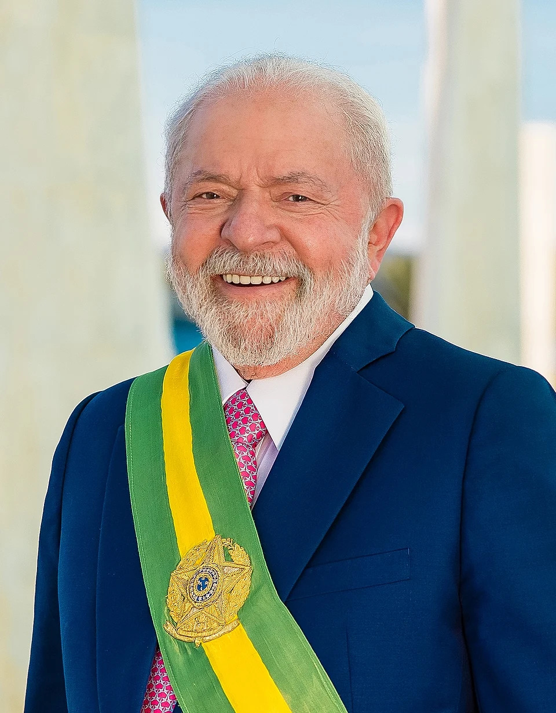

Luiz Inácio Lula da Silva">Para quem acompanha a trajetória de Luiz Inácio Lula da Silva, sua história é marcada por uma liderança carismática, discursos marcantes e uma presença constante na política brasileira. Ao longo de sua carreira, Lula construiu uma imagem de líder popular que procura defender suas convicções de maneira apaixonada, conquistando tanto admiradores quanto críticos.
Antes de chegar à Presidência da República, Lula ganhou notoriedade nacional como líder sindical nas greves dos metalúrgicos do ABC paulista e como fundador do Partido dos Trabalhadores, atuando durante décadas na defesa dos direitos trabalhistas, dos movimentos sociais e do combate à desigualdade.
Um dos momentos mais marcantes de sua trajetória aconteceu em 2002, quando venceu a eleição presidencial após sucessivas tentativas, assumindo o mandato em janeiro de 2003. Ao longo de seus governos, esteve no centro de importantes debates nacionais, envolvendo programas de combate à fome, desenvolvimento econômico, inclusão social e projeção internacional do Brasil.
Para seus admiradores, uma das características que mais chama atenção é sua capacidade de se conectar com as camadas mais populares e sua habilidade de articulação política. Seu estilo oratório e sua capacidade de mobilizar uma grande quantidade de apoiadores fizeram dele uma das figuras políticas mais marcantes e controversas da história recente do Brasil.
Independentemente de opiniões políticas, sua trajetória deixou uma presença significativa no cenário nacional e internacional, continuando a ser tema central nos debates sobre a política brasileira contemporânea.